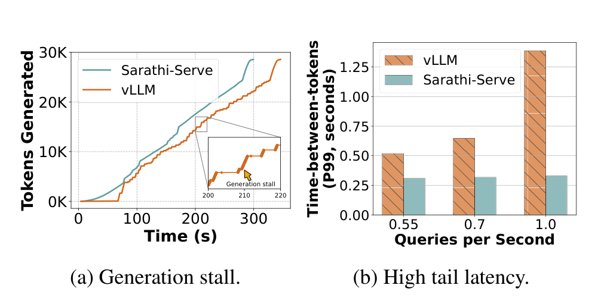
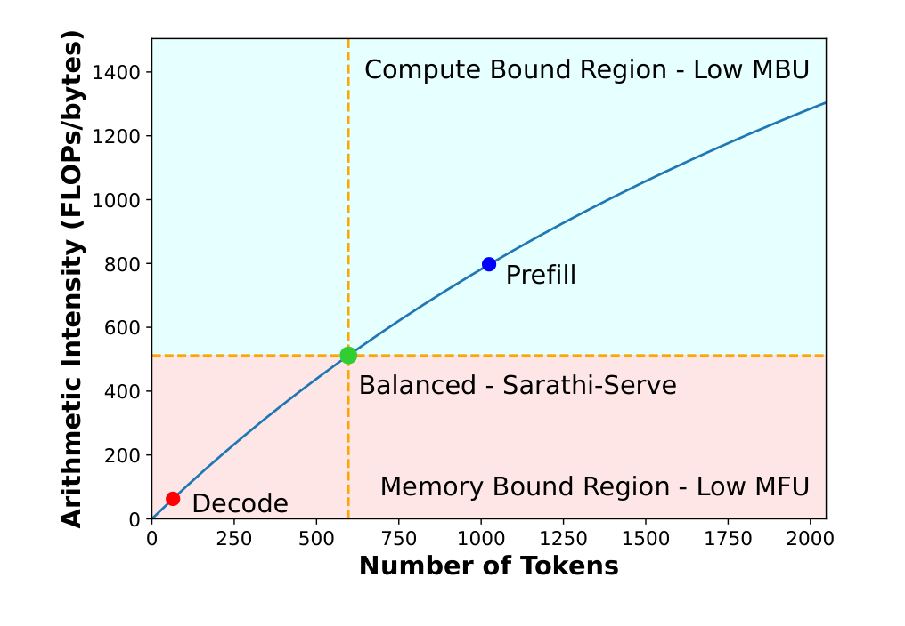
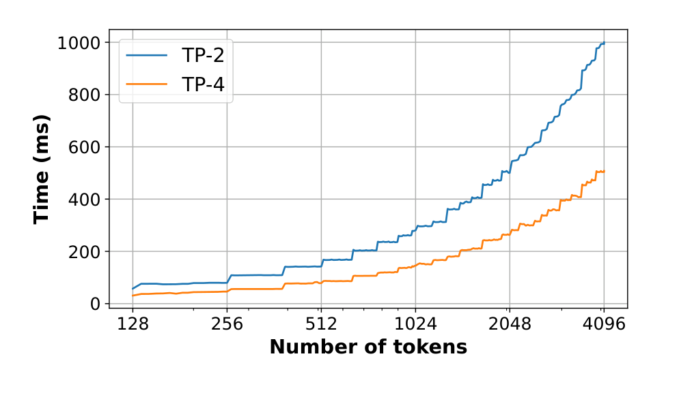
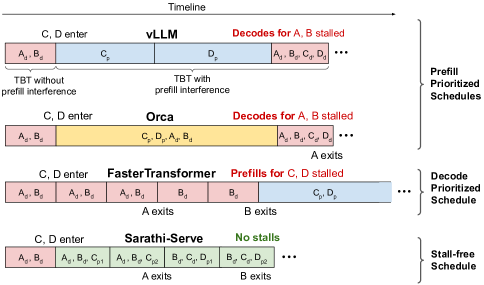
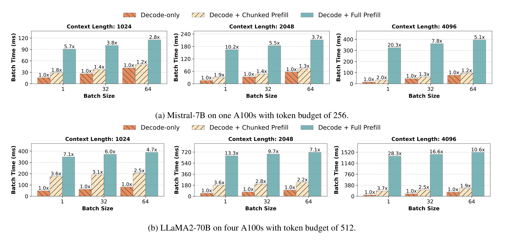
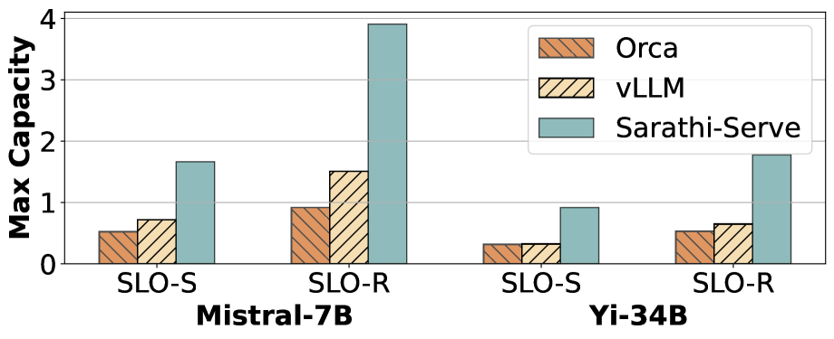
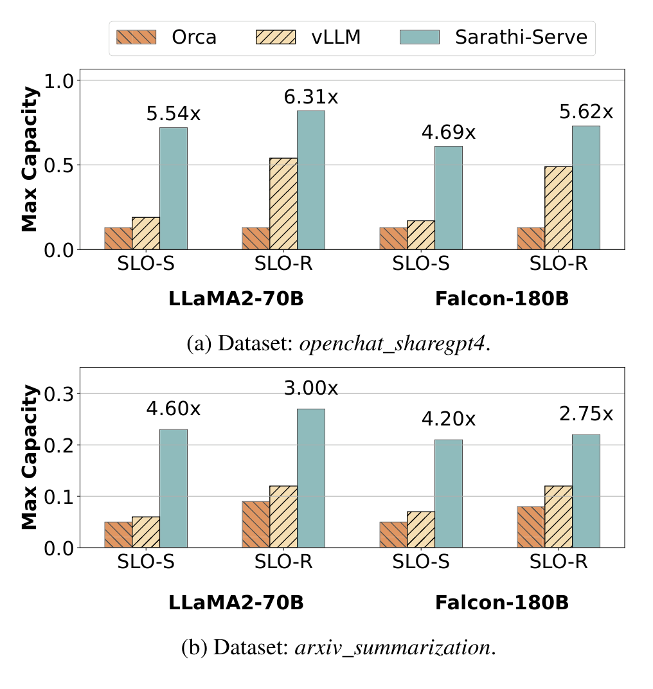
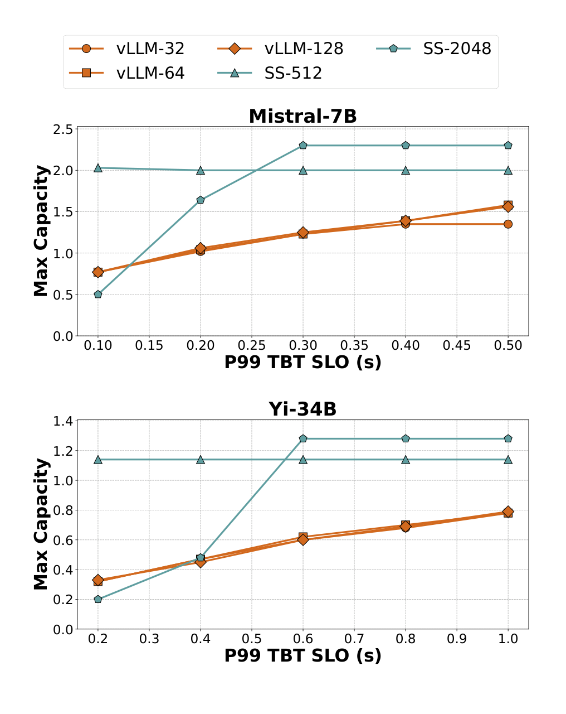
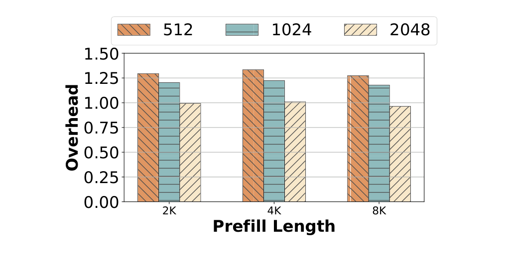
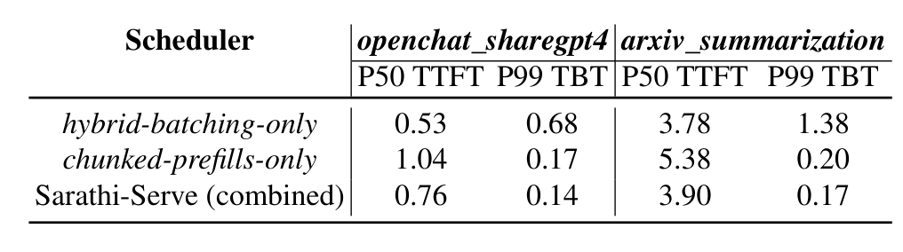

Sarathi-Serve（OSDI 2024）
Taming Throughput-Latency Tradeoff in LLM Inference with Sarathi-Serve。
Background / Motivation
与fastgen 核心执行思路高度相似：
都不再一次执行完整长 Prefill，而是把 Prompt 切成小块；每次 forward 把 Prefill Token 与正在生成的 Decode Token 组合起来，使单轮工作量较稳定。
Sarathi-Serve它新增的重点是把相似的执行机制变成一个以 P99 TBT SLO 为约束、 Decode-first 顺序、支持 Pipeline Parallel 的在线调度系统，并用 serving capacity 进行评估。
时间关系：
| 文献 | 时间与属性 |
|---|---|
| Sarathi | 2023 年 8 月 arXiv 预印本，早于 FastGen，已经提出 Chunked Prefill 与 Decode piggybacking |
| DeepSpeed-FastGen | 2024 年 1 月 arXiv 技术报告，核心机制称为 Dynamic SplitFuse |
| Sarathi-Serve | 2024 年 OSDI 正式论文，在 Sarathi 基础上扩展在线 SLO 调度与 Pipeline Parallel |
FastGen 已经说明，固定一种 forward 类型会带来问题：
- 只做 Decode 时，每轮 Token 少，GPU 计算单元利用不足。
- 插入完整长 Prefill 时，该轮耗时突然变长，正在生成的请求会卡住。
- Dynamic SplitFuse 用固定目标 Token 数把 Prefill chunk 和 Decode 组合起来，缓解这一问题。
Sarathi-Serve 回答三个更具体的在线 serving 问题：
- 卡顿怎样定义？ 不能只说 generation latency 变小，而要检查最慢的 Token 间隔，即 P99 TBT。
- 一轮先放谁？ 调度器需要明确保证正在运行的 Decode，再使用剩余预算处理 Prefill，直观来讲。
- 模型跨节点时怎么办？ 单轮大小忽大忽小不仅影响 TBT，还会让 Pipeline Parallel 的部分 GPU 等待，形成 Pipeline Bubble。

Figure 1 使用 Yi-34B、2×A100 和 128 个 arXiv summarization 请求：
- 左图横轴是时间，纵轴是累计生成 Token。vLLM 曲线出现水平段，表示几秒内没有生成新 Token；论文称为 Generation Stall。
- 右图显示负载从 0.55 增加到 1.0 QPS 后，vLLM 的 P99 TBT 快速增大，而 Sarathi-Serve 保持较低。
- 这里比较的是论文当时使用的 vLLM 版本，不能代表当前 vLLM。
Sarathi-Serve 的目标由此变成：
在满足 P99 TBT SLO 的前提下，最大化系统可以长期承受的请求到达率。
这与 FastGen 的 effective throughput 不完全相同。Sarathi-Serve 寻找满足 P99 TBT 上限且队列不会无限增长时的最大 QPS，称为 Serving Capacity。
Key Insight

Figure 5 的横轴是一个 batch 中的 Token 数，纵轴是算术强度，即每读取一个 byte 数据执行多少次浮点计算：
- 左下角的 Decode Token 少、算术强度低，主要受显存带宽限制，GPU 计算单元没有吃满。
- 右上角的 Prefill Token 多，计算单元更充分，但可能不能完全利用显存带宽。
- 中间绿色点表示把 Decode 与适量 Prefill Token 组合，使显存带宽和计算资源更平衡。

Figure 6 是实际测量。LLaMA2-70B 在 2 路或 4 路 Tensor Parallel 下，batch （一次forward）从约 128 增加到 512 Token 时，Linear 层耗时增长很小，因为这一区间仍主要在等待模型权重从 HBM 读入。超过某个规模后，计算量才开始主导，曲线明显上升。所以要尽量塞满一个合理的batch，减少这一层权重读取占比大的浪费。
Core Design：只看比 FastGen 多出来的调度约束
1. 明确的 Decode-first Stall-free Batching
每个 iteration 按下面的优先级构造 batch：
- 先给所有正在运行的请求各安排 1 个 Decode Token。
- 如果有已经开始但尚未完成的 Prefill，继续放它的下一个 chunk。
- 还有 Token Budget 和 KV 空间时，再接纳新请求的 Prefill chunk。
- 执行一次 Hybrid Forward，更新状态后进入下一轮。

这里的 Stall-free 不是说加入 Prefill 后耗时完全不增加，而是Decode 不会为了先执行一个完整 Prefill 而被暂停；Prefill 只能使用本轮允许的剩余 Token Budget。
2. Token Budget 由 TBT SLO 约束
FastGen 更强调把 forward 填到稳定的目标大小。Sarathi-Serve 则先确定应用允许的 P99 TBT，再通过离线 profiling 选择最大 Token Budget：
| SLO | 论文常用 Token Budget | 含义 |
|---|---|---|
| Strict | 512 | 单轮较短，优先控制 TBT |
| Relaxed | 2048 | 允许单轮更长，减少切块开销并提高吞吐 |
| LLaMA2-70B Relaxed | 1536 | 在延迟与 Pipeline Bubble 之间折中 |
例如预算为 512、当前有 64 个 Decode 请求时，Decode 先占 64 Token，本轮最多再加入约 448 个 Prefill Token。同前者
3. 量化完整 Prefill和Prefill Chunk的差别

Figure 9 把 Decode-only 的单轮耗时归一化为 1：
- 绿色柱是 Decode + Full Prefill，即 Orca 式完整 Prefill 混合。
- 浅色斜纹柱是 Decode + Chunked Prefill，即 Sarathi-Serve。
- 在 LLaMA2-70B、context length 2048、batch size 1 时，完整 Prefill 使该轮达到 28.3×，chunk 后为 3.6×。
- 随 Decode batch 增大，chunk 的相对额外成本进一步下降。
4. 让 Pipeline Parallel 的每轮工作量更均匀
Pipeline Parallel 把模型层分到多个 GPU stage。若相邻 iteration 分别处理几十个 Decode Token 和几千个 Prefill Token，各 stage 的完成时间差异很大，一些 GPU 会等待其他 stage，形成 Pipeline Bubble。
也就是说forward size越趋于稳定pipeline越合理，气泡占比越小。
Dynamic SplitFuse 也追求 forward size 稳定，但 FastGen 没有把 Pipeline Bubble 作为主要系统问题展开。Sarathi-Serve 明确利用受控 Token Budget 构造 uniform-compute batch，并把这一点扩展到跨节点 Pipeline Parallel。
Experiment
| 项目 | 设置 |
|---|---|
| Mistral-7B | 1×A100 80GB |
| Yi-34B | 2×A100 80GB，TP=2 |
| LLaMA2-70B | 8×A40 48GB，TP=4、PP=2 |
| Falcon-180B | 两节点共 8×A100 80GB，TP=4、PP=2；节点间 100 Gbps Ethernet |
| Workload | OpenChat-ShareGPT4、arXiv Summarization；Poisson 请求到达 |
| Baseline | Orca、 vLLM |
| 核心指标 | 满足 P99 TBT SLO 且队列稳定时的最大 QPS，即 Serving Capacity |
两种 trace 的长度差别很大：
| 数据集 | Prompt 中位数 / P90 | Output 中位数 / P90 |
|---|---|---|
| OpenChat-ShareGPT4 | 1,730 / 5,696 | 415 / 834 |
| arXiv Summarization | 7,059 / 12,985 | 208 / 371 |
这比 FastGen 主要使用正态分布生成 Prompt/Output 长度更贴近真实长 Prompt 负载，也更容易暴露 P99 TBT 和 Pipeline Bubble 问题。
Result 1：普通配置下的 Serving Capacity

Figure 10 展示 Mistral-7B 和 Yi-34B：
- Mistral-7B 相比 vLLM 最高达到 2.6× serving capacity。
- Yi-34B 相比 vLLM 最高达到 3.7×。
- 严格 SLO 使用较小 Token Budget，牺牲部分 Prefill 效率换取更低 P99 TBT；宽松 SLO 则可以使用较大预算。
Result 2：Pipeline Parallel

Figure 11 使用 LLaMA2-70B 和 Falcon-180B，二者都包含 Pipeline Parallel：
- 图中柱顶倍数是 Sarathi-Serve 相比 Orca 的提升，最高为 6.31×。
- Falcon-180B 的最高 5.62× 也是相对 Orca。
- 论文进一步在 Figure 13 中报告：Falcon-180B strict SLO 下，相比 vLLM 的纯 TP 和 TP+PP 配置分别提高 4.3× 与 3.6×。
这部分是 Sarathi-Serve 相比 FastGen 最有辨识度的结果，它证明 uniform-compute iteration 不只是让单卡 Decode 更平滑，还能降低跨节点 Pipeline Bubble。
Result 3：Token Budget 敏感度实验

- 横轴是允许的 P99 TBT SLO，越向右表示延迟约束越宽松。
- 纵轴是该 SLO 下的最大 Serving Capacity。
- vLLM 调整 max batch size 后仍较早达到容量上限。
- Sarathi-Serve 可以用 512 或 2048 Token Budget 在严格/宽松 SLO 间切换；Yi-34B 严格条件下论文报告最高约 3.5× 容量提升。
Ablation：切得越小并不一定越好

Figure 14 将不切块的 Prefill 耗时归一化为 1：
- 512-token chunk 的额外 Prefill 开销最高约 25%。
- 2048-token chunk 的额外开销接近可以忽略。
- 小 chunk 能降低单轮 TBT，但会执行更多 iteration，并降低 Prefill 本身效率。
OSDI 正式论文 Table 4 的消融结果如下，单位均为秒：

- 只做 Hybrid Batching：TTFT 最低，但完整 Prefill 严重拖慢 Decode，P99 TBT 最差。
- 只做 Chunked Prefill：TBT 明显改善，但 Prefill 分多轮完成，TTFT 较高。
- 两者结合：TTFT 介于两者之间，同时获得最低 P99 TBT。